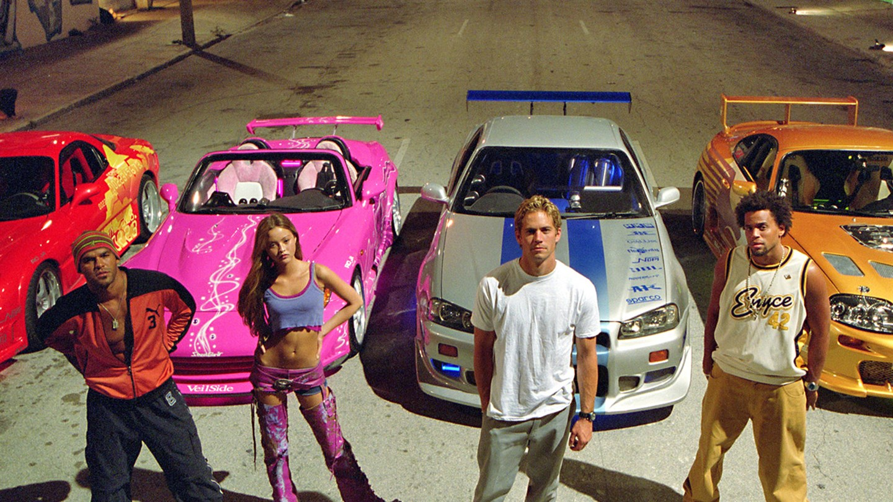

Tudo sobre Fast and the Furious
The Fast and the Furious (bra: Velozes & Furiosos; prt: Velocidade Furiosa) é um filme de ação estadunidense de 2001 dirigido por Rob Cohen e escrito por Gary Scott Thompson, Erik Bergquist e David Ayer. É o primeiro filme da franquia Fast & Furious e é estrelado por Vin Diesel, Paul Walker, Michelle Rodriguez e Jordana Brewster. O longa acompanha os passos do policial disfarçado Brian O'Conner (Walker), que investiga uma gangue liderada por Dominic Toretto (Diesel), a qual, usando carros de alta performance, vem praticando roubos a caminhões transportando equipamentos eletrônicos caros. O conceito do filme foi inspirado em "Racer X", um artigo da revista americana Vibe escrito pelo jornalista Ken Li que detalhava a cultura das corridas de rua ilegais dos Estados Unidos.
Enredo
Em uma estrada deserta, uma gangue de assaltantes, que dirigiam três Honda Civics modificados, assaltam um caminhão que transportava mercadorias eletrônicas, roubam sua carga e fogem. No dia seguinte, uma força tarefa conjunta do Departamento de Polícia de Los Angeles (LAPD) e do FBI envia Brian O'Conner, policial disfarçado, para localizar a gangue. Ele inicia sua investigação no mercado de Toretto, pedindo seu lanche de atum no pão branco, sem casca, e flertando com Mia, irmã do infame corredor de rua Dominic Toretto, enquanto Dominic ostensivamente fica no escritório lendo um jornal. A equipe de Dominic, Vince, Leon, Jesse e sua namorada Letty, chegam. Vince, que tem uma queda por Mia, começa uma briga com Brian até Dominic intervir. Naquela noite, Brian leva um Mitsubishi Eclipse 1995 modificado para uma corrida ilegal de rua, na esperança de encontrar uma pista da gangue de assalto. Dominic chega em seu Mazda RX-7 e inicia uma corrida de arrancada entre ele, Brian e outros dois pilotos. Sem dinheiro, Brian é forçado a apostar seu carro. Dominic vence a corrida após o mau funcionamento do carro de Brian, mas a polícia chega antes que ele possa entregar seu veículo. Brian, em seu carro, ajuda Dominic a escapar, mas eles acidentalmente entram no território do antigo rival de Dominic, o líder de gangue Johnny Tran e seu primo Lance Nguyen, que destroem o veículo de Brian. Mais tarde, Dominic reitera que Brian ainda lhe deve um "carro de 10 segundos". Os dois então voltam juntos para a casa de Dominic, onde uma briga entre Vince, que está irritado pela presença de Brian, e Dominic ocorre. Brian traz um Toyota Supra 1994 danificado para a garagem de Dominic como substituto do Eclipse destruído. Dominic e sua equipe iniciam o longo processo de restauração do veículo e Brian começa a namorar Mia. Ele também começa a investigar Tran, convencido de que ele é o mentor por trás dos roubos dos caminhões. Enquanto investiga uma garagem à noite, Brian é descoberto por Dominic e Vince, que exigem uma explicação.
Produção
O diretor, Rob Cohen, teve a inspiração de The Fast and the Furious depois de ler um artigo na edição de maio de 1998 da revista Vibe, intitulado "Racer X", escrito pelo jornalista Ken Li, sobre corridas de rua em Nova Iorque, e assistir pessoalmente uma corrida de rua ilegal à noite, em Los Angeles. Em seguida, Cohen convenceu a Universal Pictures para fazer o filme e, assim, o estúdio comprou os direitos do artigo de Li. Cohen conduziu suas ideias em parceria com os roteiristas Gary Scott Thompson e David Ayer. O projeto passou por inúmeros rascunhos e títulos, indo desde o título concedido do artigo da Vibe, "Racer X", para "Redline" e "Race Wars", antes de finalmente decidirem o título The Fast and the Furious. Para usar esse, no entanto, tiveram que comprar os direitos para o título, mas não a história, de um filme de mesmo nome de 1954 escrito por Roger Corman. O produtor Neal H. Moritz, que já havia trabalhado com Paul Walker no filme Sociedade Secreta (2000), deu ao ator um roteiro e ofereceu o papel de Brian O'Conner. Originalmente, o estúdio disse aos produtores que dariam sinal verde ao filme se conseguissem que Timothy Olyphant fizesse o papel de Dominic Toretto. Olyphant, no entanto, que estrelou o sucesso de bilheteria 60 Segundos (2000), do ano anterior, recusou o papel. Moritz sugeriu Diesel, que tinha que ser convencido a assumir o papel, mesmo que ele tivesse desempenhado papéis de apoio até aquele momento de sua carreira.

Filmagens
O filme foi rodado em vários locais dentro de Los Angeles e partes do sul da Califórnia, de julho a outubro de 2000. Os principais locais incluem o Dodger Stadium (na cena de abertura em que Brian testa seu Eclipse no estacionamento), Angelino Heights, Silver Lake e Echo Park (os bairros ao redor da casa de Toretto), bem como Little Saigon (onde Jony Tran destrói o Eclipse) e o Aeroporto Internacional de San Bernardino (o local para Race Wars, que atraiu mais de 1.500 proprietários e entusiastas de carros importados). Toda a última cena do assalto ao caminhão plataforma foi filmada ao longo da Domenigoni Parkway, no lado sul de San Jacinto / Hemet, no vale de San Jacinto, perto do lago Diamond Valley, a cena final onde Brian e Toretto correm até atravessar o trilho do trém foi filmada no "Terminal Island", o terminal portuário proxima a San Pedro - CA, mais precisamente na Avenida Terminal Way, e o cruzamento com o trem fica na "Terminal Way com a Earle st.", pouco mais a frente fica o local onde Toretto bate no caminhão e capota.